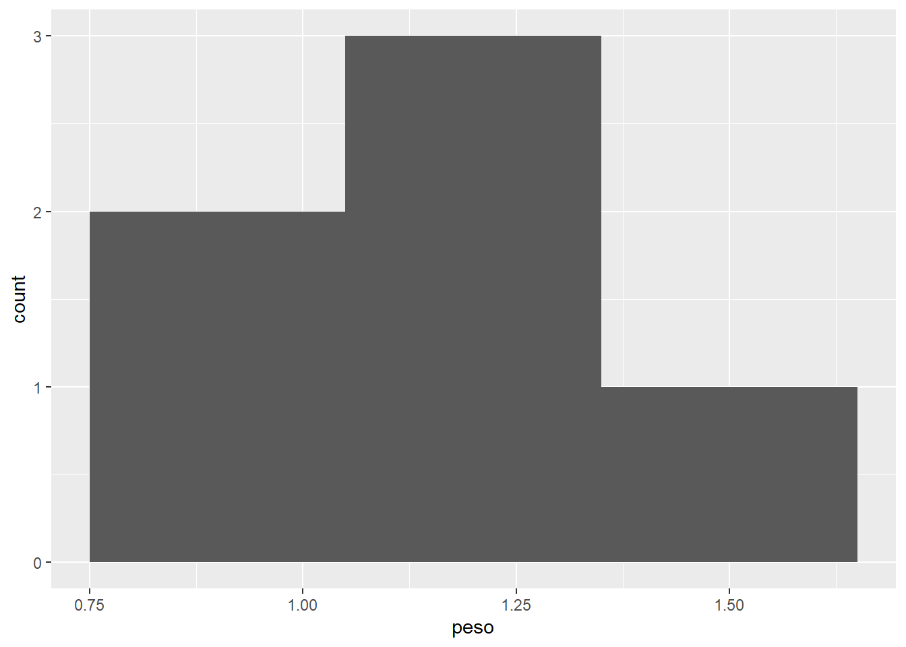

── Conflicts ────────────────────────────────────────── tidyverse_conflicts() ──
✖ dplyr::filter() masks rstatix::filter(), stats::filter()
✖ dplyr::lag() masks stats::lag()
ℹ Use the conflicted package (<http://conflicted.r-lib.org/>) to force all conflicts to become errors
Tarea 1
Cuál es el resultado de la siguiente operación: (3+5)/2
(3+5)/2
[1] 4
Calcula 10 a la (potencia) 5 y a ese resultado súmale 5 y luego multiplica ese resultado por 3
((10^5)+5)*3
[1] 300015
Evalúa si 5 es mayor que 1. Pon tal cuál la respuesta de la consola de R (TRUE o FALSE).
5>1
[1] TRUE
Evalúa si la palabra “variable” es igual a la palabra “variable2”. Pon tal cual la respuesta de la consola de R (TRUE o FALSE).
Aquí recuerden que = sirve para guardar algo dentro de un objeto, == es para comparar si el objeto del lado izquierdo es igual al del lado derecho.
"variable"=="variable2"
[1] FALSE
Crea un objeto con a <- data.frame(a = 1:3, b = 2:4). ¿Qué tipo de objeto es a?
a <-data.frame(a =1:3, b =2:4)class(a)
[1] "data.frame"
Crea un objeto b <- list(a, a). Cuál es el valor del primer renglón, de la segunda columna de la primera entrada de la lista? Recuerda cómo se accede a las entradas de una lista y de un data.frame
b <-list(a, a)b[[1]][1,2]
[1] 2
Qué tipo de objeto es z <- matrix(1:4, nrow = 2). En R salen dos tipos de objetos, pon el primero que sale.
z <-matrix(1:4, nrow =2)class(z)
[1] "matrix" "array"
Crea un objeto y que contenga una secuencia de 100 al 1000 en intervalos de 1 y calcula el promedio de ese objeto. La función para calcular el promedio se llama mean.
y <-100:1000mean(y)
[1] 550
Crea una funcion llamada mifunc que le sume 8 al número que tenga como entrada. Después aplica esa función sobre la entrada 100 del objeto y (creado en la pregunta anterior). ¿Cuál es el resultado?
Crea un ciclo con for que le sume 100 a cada entrada del objeto y. ¿Cuál es el valor de la entrada 200 del resulado?
for(i in1:length(y)){ y[i] <- y[i] +100}y[200]
[1] 399
Tarea 2
¿Cómo se instalarías un nuevo paquete que se llama “dplyr” en R? Anota la sintaxis tal cual con la función y el nombre del paquete.
install.packages("dplyr")
¿Cómo cargas al entorno de trabajo el paquete previamente instalado de “dplyr”? Anota la sintaxis tal cual con la función y el nombre del paquete.
library("dplyr")
¿Con qué función puedes leer datos desde un archivo separado por comas (csv)?. Hay varias opciones, pero solo menciona una.
read.csv
o del paquete readr
read_csv
¿Con qué función puedes escribir un conjunto de datos como un archivo con extensión .rds (archivo nativo de R)?
saveRDS
Aunque no lo vimos en clase también existe la función
write_rds
¿Qué paquete necesitas cargar en tu entorno de trabajo para poder leer datos desde un archivo de excel (.xlsx)?
readxl
¿Cómo se llama el argumento de la función read.csv que indica la codificación de la información contenida en un archivo csv.
encoding
Aunque para lectura en la clase usamos encoding, también se puede usar fileEncoding. Hay una pequeña diferencia entre usar una y otra. encoding lo lee con el encoding indicado, mientras que fileEncoding intenta convertir del encoding indicado al que tenga tu sesión de Rstudio.
fileEncoding
¿Cuántos datos en la columna de biomasa (biomasa_kg_C3) tienen entrada NA (es decir, sin dato o sin observación)?
Warning: Expecting numeric in BW19313 / R19313C75: got 'NULL'
Warning: Expecting numeric in BX19313 / R19313C76: got 'NULL'
which(is.na(datos$biomasa_kg_C3))
[1] 19312
La respuesta correcta era uno, aunque el valor anterior dice 19312, eso realmente solo nos dice que la observación 19312 es la que tiene valor de NA.
length(which(is.na(datos$biomasa_kg_C3)))
[1] 1
Cuántas familias de plantas distintas se registraron en los datos. Esta información viene codificada en la columna “Familia_APG_C3”.
length(unique(datos$Familia_APG_C3))
[1] 68
¿Cómo se llama la función con la cual puedes construir una gráfica de tipo histograma?
hist
¿Cuál argumento de la función plot maneja el intervalo de valores mínimo y máximo que se muestran en el eje x? Solo indica el nombre del argumento.
xlim
Tarea 3
¿Cómo se escribe el “pipe” nativo en R versión mayor a 4.0?
|>
El otro pipe %>% aunque también funciona en R, hay que cargar el paquete magrittr, por ello no corresponde al pipe nativo.
¿Cuál es la función que se usa para transformar un objeto de tipo data.frame a uno tibble?
as_tibble()
La función as.tibble() no existe.
¿Qué función te permite filtrar datos a partir de ciertas condiciones?
filter()
¿Con que función agregas una nueva columnas a un tibble?
mutate()
¿Cuál función te permite modificar una columna en su lugar?
mutate(across())
¿Cuál función te permite ordenar datos de acuerdo a una columna?
arrange()
Si quieres probar en R cómo le podrías hacer con un ejemplo concreto. Usa el siguiente código para generar el tibble que se indica en las siguientes dos preguntas
datos <-tibble(grupo =c("A", "A","B","C"),valor =c(1,2,3,4))
Si tenemos un tibble que se llama datos con una columna llamada grupo y otra llamada valor. ¿Cómo puedes calcular el número de observaciones por cada nivel de la columna grupo?
Hay varias respuestas correctas, pero las dos principales son:
datos |>group_by(grupo) |>count()
# A tibble: 3 × 2
# Groups: grupo [3]
grupo n
<chr> <int>
1 A 2
2 B 1
3 C 1
datos |>group_by(grupo) |>summarise(n =n())
# A tibble: 3 × 2
grupo n
<chr> <int>
1 A 2
2 B 1
3 C 1
Hubo varias respuestas con n_distinct o sum. sum no daba el resultado esperado porque suma los valores dentro de la columna valor. Aunque n_distinct si daba el resultado esperado, lo daba por la razón incorrecta. n_distinct cuenta el número de valores únicos distintos. Por lo tanto, estrictamente no es un conteo del número de observaciones por grupo, sino el número de observaciones distintas (en algunos casos no van a dar igual).
Si tenemos un tibble que se llama datos con una columna llamada grupo y otra llamada valor. ¿Cómo puedes sacar el valor (de la columna valor) más alto de cada nivel en la columna grupo (de la columna grupo)?
Hay varias respuestas correctas, pero las tres principales son:
datos |>group_by(grupo) |>arrange(desc(valor)) |>slice_head(n=1)
# A tibble: 3 × 2
# Groups: grupo [3]
grupo valor
<chr> <dbl>
1 A 2
2 B 3
3 C 4
datos |>group_by(grupo) |>arrange(desc(valor)) |>slice(1)
# A tibble: 3 × 2
# Groups: grupo [3]
grupo valor
<chr> <dbl>
1 A 2
2 B 3
3 C 4
datos |>group_by(grupo) |>summarise(max =max(valor))
# A tibble: 3 × 2
grupo max
<chr> <dbl>
1 A 2
2 B 3
3 C 4
¿Cuál es la función para convertir los datos de un formato largo a uno ancho?
pivot_wider()
¿Cómo escribirías la función de tidyr para quitar las observaciones (o filas) que contengan NA en la columna biomasa_kg_C3 en un tibble llamado datos?
datos |>drop_na(biomasa_kg_C3)
Tarea 4
Pruebas estadísticas
¿Qué tipo de pruebas usarías para analizar datos que no se distribuyen de manera normal?
pruebas no paramétricas
¿Qué función te permite probar si una variable se distribuye de manera normal?
library(rstatix)shapiro_test()
Algunos pusieron shapiro.test. También la tomé como buena porque aunque no es de las funciones del paquete rstatix existe y sirve para hacer la prueba de Shapiro.
En esta respuesta como cargué el paquete rstatix para dejar claro que se requiere para poder usar las funciones vistas en clase.
Qué función usarías para comparar dos medias que se distribuyen de manera normal
t_test()
¿Qué función usarias para comparar dos medias que se distribuyen de manera NO normal?
wilcox_test()
Aunque tomé wilcox_test como buena, realmente esta prueba compara medianas no medias. La respuesta 100 % correcta debería haber sido que si las medias no son normales, se podría usar wilcox_test para comparar medianas, no medias.
Con los siguientes datos sobre la talla (largo en cm) de carpas (Cyprinus carpio) en tres distintos ambientes, evalúa las siguiente pruebas estadísticas. Ojo: corre la línea de set.seed antes de correr los datos para que siempre den los mismos valores (rnorm genera datos aleatorios con una distribución particular).
En este código set.seed genera una semilla aleatoria que asegura que siempre que se corra la siguiente línea den los mismos valores. Por su parte, rnorm genera datos con una distribución normal. El primer argumento dice cuántos datos queremos, el segundo, el valor del promedio o la media y el tercero, la desviación estándar.
Suponiendo que los datos se distribuyen de manera normal y tienen homogeneidad de varianzas. ¿Cómo probarías si hay diferencias significativas entre las medias de la talla de los peces entre los tres tipos de ambiente?
datos |>anova_test(talla ~ ambiente)
ANOVA Table (type II tests)
Effect DFn DFd F p p<.05 ges
1 ambiente 2 147 273.528 2.85e-50 * 0.788
Hay por lo menos una media distinta. El valor de significancia es menor a 0.05
¿Encontraste por lo menos diferencias significativas en alguna de las medias del ejercicio anterior? Si sí, cómo harías para detectar cuáles medias son distintas entre sí. Utiliza la prueba de Tukey.
Todos. Todas las comparaciones pareadas muestran una significancia menor a 0.05
Con los siguientes datos sobre la talla (largo en cm) de cocodrilos ( Crocodylus acutus) y el número de huevos puestos, evalúa las siguiente pruebas estadísticas. Ojo: corre la línea de set.seed antes de correr los datos para que siempre den los mismos valores (rnorm genera datos aleatorios con una distribución particular).
¿El largo de los cocodrilos permite explicar el número de huevos que ponen? o en otras palabras, ¿la pendiente de la regresión es significativa? Contesta sí o no.
Sí
En el siguiente código podemos ver que el valor de significancia (p.value) es menor que 0.05 para el término talla, por lo cual, rechazamos la hipótesis nula y concluimos que el largo de los cocodrilos permite explicar el número de huevos.
datos |> (\(x) lm(huevos ~ talla, data = x))() |>tidy()
Utiliza los siguientes datos para generar los gráficos de la tarea. Se trata del registro de largo (cm) y peso (kg) de tlacuaches (Didelphis marsupialis) en tres localidades distintas.
Cómo harías un gráfico de puntos (scatterplot) que muestre en el eje x el largo de los tlacuaches y en el eje y su peso. Coloca el código que usarías en R.
datos |>ggplot(aes(x = largo, y = peso)) +geom_point()
Cómo harías un gráfico de tipo histograma que muestre la distribución de la variable peso de los datos de los tlacuaches. Coloca el código que usarías en R.
datos |>ggplot(aes(x = peso)) +geom_histogram(bins =3)

Con los datos de los tlacuaches, cómo harías un gráfico de columnas que muestre en el eje x las localidades, en el eje y el largo de los individuos y el relleno de las columnas indique su peso. Coloca el código que usarías en R.
datos |>ggplot(aes(x = localidad, y = largo, fill = peso)) +geom_col()
Aunque la respuesta correcta era la anterior, varias personas me comentaron que la gráfica no comunicaba muy bien el mensaje porque apilaba las barras. Entonces para solucionarlo había dos alternativas
Ponerle posición “dodge” para que no apile las barras
datos |>ggplot(aes(x = localidad, y = largo, fill = peso)) +geom_col(position ="dodge")
o 2. Resumir el largo y peso promedio por localidad
datos |>group_by(localidad) |>summarise(promlargo =mean(largo),prompeso =mean(peso),.groups ="drop") |>ggplot(aes(x = localidad, y = promlargo, fill = prompeso)) +geom_col()
¿Qué función permite cambiar los títulos de los ejes de la gráfica que se colocan por default? Recuerda que por default en ggplot, los ejes toman el nombre de la variable representada en cada eje.
labs()
Qué función permite modificar la representación del eje Y cuando la variable representada en este eje es una variable continua. Esta función permite cambiar los límites del eje, así como los intervalos donde se muestran etiquetas.
scale_y_continuous()
Qué función permite cambiar la escala de colores asignada de manera automática a un gráfico, al mapear una variable en el argumento de fill.
Cualquiera de las siguientes era correcta (con o sin paréntesis):
Qué función permite guardar un plot generado con ggplot a un archivo en disco (p.ej., png, pdf, o jpg)
ggsave()
Algunos contestaron save_plot y se las puse bien. Esa función es del paquete cowplot, pero también sirve para exportar gráficas.
Qué paquete permite juntar dos gráficos generados por separado en uno solo.
cowplotpatchwork
Tarea 6
Gráficas con ggplot2
Utiliza los siguientes datos para generar los gráficos de la tarea. Se trata del registro de largo (cm) y peso (kg) de tlacuaches (Didelphis marsupialis) en tres localidades distintas.
BiodiversityR 2.16-1: Use command BiodiversityRGUI() to launch the Graphical User Interface;
to see changes use BiodiversityRGUI(changeLog=TRUE, backward.compatibility.messages=TRUE)
Con qué función del paquete vegan calcularías una curva de acumulación de especies.
specaccum()
El número de Hill exponente 0 es igual a qué índice de diversidad “clásico”.
Riqueza de especies
Qué función del paquete iNEXT te permite calcular los índices de Hill.
estimateD()
También la función iNEXT() te permite calcular los índices de Hill, pero hay que buscar dentro de los resultados para ver los estimados con el número de individuos que se muestrearon en cada parcela. Esto correponde a la entrada que en Method dice Observed, dentro de la lista resul$iNextEst$size_based
resul <-iNEXT(t(datos))resul$iNextEst$size_based
Qué función del paquete iNEXT te permite crear una curva de acumulación de especies. Ojo: obtener los datos de la curva de acumulación de especies, no generar el gráfico de la curva de acumulación de especies.
iNEXT()
Qué función del paquete iNEXT te permite generar una gráfica de curva de acumulación de especies, utilizando los resultados de la función iNEXT.
ggiNEXT()
¿Qué función te permite calcular los valores para generar una curva de rango - abundancia?
rankabundance()
Cómo calcularías el número de Hill exponente 0 para los datos de abundancia del manglar. En este caso, en el argumento de level le puedes poner el número de individuos al que quieres rarificar o extrapolar el número de Hill. En este caso, estima el número de especies estimado para 9 individuos (lo cual implica que se calcularía mediante rarefacción). ¿Cuál sería el valor de riqueza de especies rarificado a 9 individuos para el sitio 5?
Qué tipo de modelo trata de describir la relación de dependencia entre dos variables numéricas.
Regresión
Al crear predicciones basadas en un modelo predictivo cuáles son los dos componentes del error.
con vegan
Varianza y sesgo
Cuál paquete dentro de tidymodels sirve para evaluar los modelos ajustados mediante métricas de error o de ajuste.
yardstick
Qué función permite dividir los datos en un set de entrenamiento y prueba (Pista: es el paso anterior a correr las funciones training y testing).
initial_split()
Qué función permite definir una receta y los datos a usar por ésta, para un generar un modelo
recipe()
Qué función permite ajustar un modelo, definido mediante un flujo de trabajo (donde ya se incluye la receta y el tipo de modelo a ajustar).
fit()
Qué función permite “sembrar una semilla” para que cualquier proceso aleatorio siempre de el mismo resultado (lo cual asegura la reproducibilidad). Esto se usa por ejemplo, para asegurarse que las mismas observaciones siempre se vayan para datos de entrenamiento y otras siempre a datos de prueba.
set.seed()
Qué función permite agregar las predicciones como una columna al lado de los datos originales. Esto normalmente se hace con los datos de prueba
augment()
Qué función te permite definir las métricas a utilizar para evaluar el desempeño de un modelo ajustado. Pueden ser métricas de error o métrias de ajuste.
metric_set()
Menciona un método de validación cruzada que vimos en clase